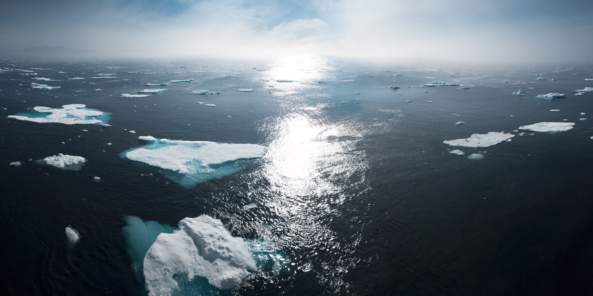

Minha casa, nossa casa
Há várias formas de ajudar o nosso lar. Com pequenos gestos ele nos agradecerá por anos a fio. Arraste para baixo e saiba mais!
Andar de bicicleta ou dirigir um carro?
Desde a infância, muitas crianças são ensinadas a andar de bicicleta e que é um hábito saudável. Além dos seus benefícios como, por exemplo, mais disposição, ânimo, emagrecimento e aumento do fôlego, esta atividade também pode ajudar a... ler mais
Autor, 11.11.2022Dica!
Qual a importância das energias renováveis?
As energias renováveis, como o nome já diz, são capazes de não emitirem gases de efeito estufa enquanto está gerando energia, tornando-se uma solução mais limpa e viável... ler mais
Autor, 14.11.2022Conhecimento